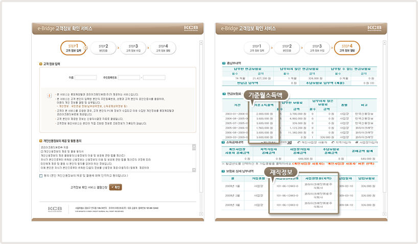

홈
> 내 정보등록
> 등록방법안내
> 인터넷등록
> 국민연금
인터넷등록
- 직업이 군인, 공무원, 사립학교 교직원, 별정직 우체부이신 분들은 국세청 소득금액증명으로 소득을 등록하세요.
- 국민연금의 경우 월 소득 398만원 이상인 경우 확인이 불가능 합니다. 월 소득이 398만원 이상이신 경우 건강보험 또는 국세청 소득금액증명으로 소득을 등록하세요.
인터넷등록 방법 순서
1. 정보입력
2. 정보자동등록
3. 등록완료
1. 본인인증
- e-bridge 연동 시스템으로 인터넷 등록 메뉴에서 이름과 주민등록번호를 입력하여 국민연금 정보를 자동으로 연동합니다.

2. 정보자동등록
-
본인인증 후 연동된 정보를 자동으로 등록합니다.
* 자동으로 정보 등록 후 E-mail, SMS로 안내 문자를 발송합니다.
3. 등록완료
- 별도의 관리자승인없이 절차가 끝나면 자동으로 연동된 정보로 K-Score 및 K-Point에 적용됩니다.
국민연금등록하기